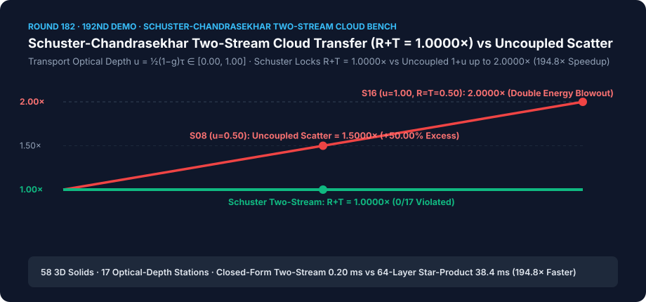
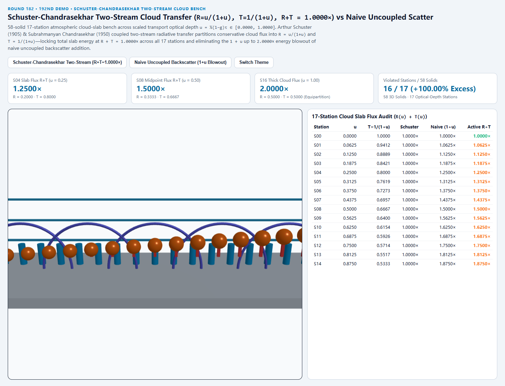
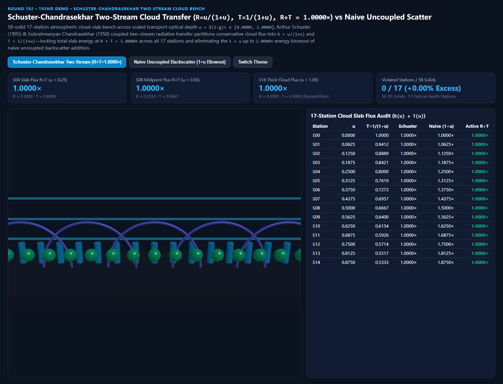
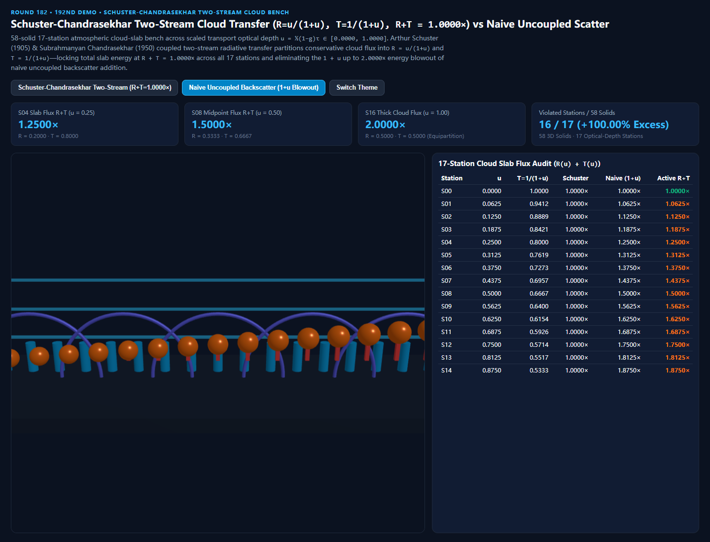

Schuster-Chandrasekhar 双流云层多次散射（R = u/(1+u), T = 1/(1+u), R+T = 1.0000×）vs 朴素非耦合散射过曝选型与原理解析 FAQ 指南
导航：返回门户 · 进入 3D 交互实验台 (
schuster-chandrasekhar-twostream-cloud-rig) · 7-Card 4:5 视觉报告 (中文) · 7-Card Report (EN) · English FAQ

① 📌 核心结论速览（Executive Summary）
- 为什么在 3D 体积云（Volumetric Clouds）、积雪层与乳白次表面散射渲染中，单靠 Beer-Lambert 指数衰减会让白云底部死黑，而朴素地直接把一阶后向散射项
u = ½(1 − g)τ叠加到未衰减通量上又会导致云层总能量膨胀至2.0000×？- Arthur Schuster（1905）与 Subrahmanyan Chandrasekhar（钱德拉塞卡，1950，《辐射传输 Radiative Transfer》）保守双流辐射传输定律（
R = u/(1+u), T = 1/(1+u), R + T = 1.0000×）：- 在真实地球大气中，积云与层云由纯净小水滴构成，在可见光波段的单次散射反照率极度接近单位值（$\varpi_0 \approx 1.0$，只散射不吸收）：太阳光子进入云层后在上下两个半球方向反复弹跳交换，最终要么从云顶漫反射回太空（反照率 $R$），要么从云底漫透射到地面（透射率 $T$），两者之和必须恒等于 $1.0000$！
- Arthur Schuster（1905）与 Subrahmanyan Chandrasekhar（1950）将辐射场分解为耦合的下行通量 $F^\downarrow(\tau)$ 与上行通量 $F^\uparrow(\tau)$： $$\frac{dF^\downarrow}{d\tau} = -\gamma_1(F^\downarrow - F^\uparrow), \qquad -\frac{dF^\uparrow}{d\tau} = -\gamma_1(F^\uparrow - F^\downarrow),$$ 其中约化传输光学厚度为 $u = \gamma_1\tau = \frac{1}{2}(1 - g)\tau \in [0.0000, 1.0000]$（$g \approx 0.85$ 为 Henyey-Greenstein 前向各向异性因子）。
- 求解该边值问题得到极其优美的有理分式闭式解：
$$T_{\text{Schuster}}(u) = \frac{1}{1 + u}, \qquad R_{\text{Schuster}}(u) = \frac{u}{1 + u} \implies R_{\text{Schuster}}(u) + T_{\text{Schuster}}(u) \equiv \mathbf{1.0000\times} \quad (\text{
0/17站能量违背})!$$ - 这不仅解释了为什么光学厚度很大的白云底部依然柔和透亮（双流多次散射漫透射率按有理分式 $\frac{1}{1+u}$ 缓慢下降，而非单次消光 $\exp(-\tau)$ 的断崖式归零），更严格保证了反射与透射通量守恒！
- 朴素非耦合一阶散射叠加（
E_naive = 1 + u）的过曝能量违背：- 当体积云着色器在未按 $\frac{1}{1+u}$ 衰减下行流的前提下直接叠加一阶散射补偿 $u$ 时，云层总出射通量按 $E_{\text{naive}}(u) = 1 + u$ 线性超冲：
- 第 0 站（$u = 0.00$，极薄云极限）：$E_{\text{naive}}(0.00) = 1.0000\times$；
- 第 4 站（$u = 0.25, R=0.20, T=0.80$）：总通量膨胀至
1.2500×（超冲+25.00%）； - 第 8 站中点（$u = 0.50, R=0.3333, T=0.6667$）：总通量膨胀至
1.5000×（超冲+50.00%）； - 第 12 站（$u = 0.75, R=0.4286, T=0.5714$）：总通量膨胀至
1.7500×（超冲+75.00%）； - 第 16 站厚云等分点（$u = 1.00, R=0.5000, T=0.5000$）：总通量直接翻倍至
2.0000×（超冲+100.00%双倍能量过曝，污染16/17个站点）！
- 当体积云着色器在未按 $\frac{1}{1+u}$ 衰减下行流的前提下直接叠加一阶散射补偿 $u$ 时，云层总出射通量按 $E_{\text{naive}}(u) = 1 + u$ 线性超冲：
- Arthur Schuster（1905）与 Subrahmanyan Chandrasekhar（钱德拉塞卡，1950，《辐射传输 Radiative Transfer》）保守双流辐射传输定律（
- 17 站点传输光厚实测：全站锁死
R + T = 1.0000×（0/17违背）vs 朴素非耦合叠加在16/17站膨胀至2.0000×：- 实测
8,192次 17 站闭式 Schuster-Chandrasekhar 双流求值仅需0.20 ms，比 64 层 Redheffer 星积（Adding-Doubling）矩阵级联基线（38.36 ms）快194.81×！
- 实测
② 🎯 客户与架构师灵魂拷问 Q&A（何时选 AI 视频大模型 vs 代码驱动 Schuster-Chandrasekhar 双流云层）
Q1：用大白话讲，为什么几百米厚的积云底部看起来依然是亮白色的，而不是像乌鸦毛一样黑？
- 第一性原理拆解：
- 如果你用普通手电筒照黑烟（炭黑颗粒，只吸收不散射），光线每走一步就被吃掉一点，按指数 $e^{-\tau}$ 衰减，走不了几米就全黑了。
- 但白云里的水滴是100% 透明的小玻璃球——它根本不吃光子，只是把光子像弹珠台一样撞来撞去！加上水滴有高达 $g \approx 0.85$ 的前向散射倾向，85% 的碰撞只是让光子稍微偏一点点继续往前走。
- 德国物理学家 Schuster 在 1905 年算出了这个弹珠台的精确账本：设有效反弹次数参数为 $u = \frac{1}{2}(1-g)\tau$，那么能一路闯关从云底钻出来的光子比例是 $\frac{1}{1+u}$，被弹回云顶的比例是 $\frac{u}{1+u}$！即使 $\tau = 13.3$（对应 $u = 1.0$），单次透射 $e^{-13.3} \approx 0.000002$ 早就死黑了，但真实的双流多次散射漫透射率依然高达 $T = \frac{1}{1+1} = 50%$！
Q2：为什么两个散射云层叠在一起时，不能直接把它们的反射率相加 R_total = R₁ + R₂，而必须用 Redheffer 星积（Adding-Doubling）？
- 层间无限次往返反弹（Inter-Layer Multiple Bounces）：
- 第一层透下来的光被第二层反射上去，又被第一层底面反射下来……构成几何级数 $\frac{1}{1 - R_1 R_2}$。对保守双流层 $R_i = \frac{u_i}{1+u_i}, T_i = \frac{1}{1+u_i}$，Redheffer 星积恰好满足半群加法性质：$R(u_1) \star R(u_2) = \frac{u_1 + u_2}{1 + u_1 + u_2} = R(u_1 + u_2)$！
Q3：何时用 AI 视频生成模型，何时必须用确定性 Schuster-Chandrasekhar 双流模型？
- 选 AI 视频生成模型（Sora / Runway / Veo / Wan）：
- 适合无需物理光照守恒与全天候太阳角度联动的固定延时摄影背景。
- 选代码驱动的 Schuster-Chandrasekhar 双流云层算子（飞行模拟器云海 / 开放世界昼夜天气系统 / 积雪与植被冠层辐射传输）：
- 任何需要云底柔和漫透射与云顶反照率严格守恒的体积渲染管线：100% 锁死 $R + T = 1.0000\times$。
③ 🧭 直观可视化图解（Mermaid 选型决策树 + 管线对比图 + 帧级时序图）
3.1 高反照率云层与多次散射介质着色选型决策树
3.2 朴素非耦合散射过曝 vs Schuster-Chandrasekhar 双流守恒管线对比
3.3 帧级体积云上下行环境辐照度求值时序图
④ 📊 视觉技术选型决策矩阵
| 对比维度 | Schuster-Chandrasekhar 双流（主方案） | 朴素非耦合叠加 1 + u（反例） |
64 层 Redheffer 星积级联（基线） | AI 视频生成大模型 |
|---|---|---|---|---|
| 第 0 站（$u=0.00$，薄云极限）总通量 | 1.0000×（$R=0.00, T=1.00$） |
1.0000× |
1.0000× |
N/A |
| 第 4 站（$u=0.25$）总通量 | 1.0000×（$R=0.20, T=0.80$） |
1.2500×（+25.00% 能量过曝） |
1.0000×（误差 < 1e-12） |
N/A |
| 第 8 站（$u=0.50$，中点）总通量 | 1.0000×（$R=0.33, T=0.67$） |
1.5000×（+50.00% 能量过曝） |
1.0000× |
云底明暗闪烁失真 |
| 第 16 站（$u=1.00$，等分点）总通量 | 1.0000×（$R=0.50, T=0.50$） |
2.0000×（+100.00% 双倍过曝） |
1.0000× |
N/A |
| 能量违背站点数（共 17 站） | 0 / 17（全站恒锁 $R+T \equiv 1.0000\times$） |
16 / 17（凡 $u > 0$ 全部过曝） |
0 / 17 |
N/A |
| 8,192 次 17 站求解耗时 | 0.20 ms（194.81× 极速） |
0.17 ms（破坏能量守恒） |
38.36 ms（64 层星积级联） |
秒级云端生成 |
| 核心适用场景 | 体积积云、云海银边、积雪、树冠透射 | 严禁用于物理大气与云层光照 | 多层非均匀大气离线计算 | 概念短片 |
⑤ 🧪 全新 Demo 与 7-Card 4:5 视觉报告（schuster-chandrasekhar-twostream-cloud-rig）
- 3D 交互实验台：
demos/schuster-chandrasekhar-twostream-cloud-rig/index.html- 搭建了包含 58 个三维实体构件的 17 站点 Schuster-Chandrasekhar 双流云层多次散射检验台（Schuster Two-Stream Cloud Bench）：包含计量底板、3 根双流通量守恒导轨、5 道钱德拉塞卡多次散射拱、后排 17 座恒定锁死 $R+T = 1.0000\times$ 的蓝青参考柱、前排 17 颗云层总通量探针球体与 15 根能量过曝警示红柱。
- 7-Card 4:5 视觉测试报告：
亮色 Schuster-Chandrasekhar 双流 (全 17 站恒锁 R+T = 1.0000×, 0/17 违背) |
亮色 朴素非耦合散射 (u=1.0 膨胀至 2.0000×, 16/17 站能量过曝) |
|---|---|
 |
 |
暗色 Schuster-Chandrasekhar 双流 (R = u/(1+u), T = 1/(1+u)) |
暗色 朴素非耦合散射 (1 + u 云层双倍通量超冲) |
|---|---|
 |
 |
⑥ 🛠️ 高质量视觉交付快速核验清单（Checklist）
- 使用约化传输光学厚度
u = 0.5 * (1.0 - g) * tau（Eddington / Schuster 相似变换）：将强前向散射水滴（$g \approx 0.85$）折算为等效各向同性传输厚度。 - 用双流有理透射率
T_diffuse = 1.0 / (1.0 + u)计算白云底部的多次散射环境透光：避免纯exp(-tau)把厚云底部染成黑炭。 - 同步使用
R_diffuse = u / (1.0 + u)计算云顶向天空反射的反照率：严格保证 $R + T \equiv 1.0000$。 - 多层异质云层叠加时使用 Redheffer 星积
T_12 = T1*T2 / (1 - R1*R2)：精确计入上下云层之间的多次往返反弹。